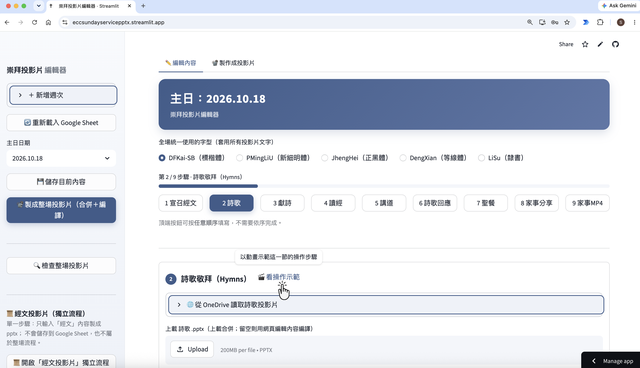

Edit each Sunday's worship content in the browser and build &
download the whole-service PowerPoint (.pptx) in one click.
No PowerPoint install, no local server.

YYYY.MM.DD.Sunday_Service_<date>.pptx.詩篇 34:1-3), then
fetch from fhl.net in one click; multi-book, cross-chapter,
和合本 / 和修版 / 新譯本; auto-splits by font size and never breaks
mid-punctuation..pptx
in one go..pptx (the file wins), or fetch standard
names from SharePoint (psalm_ / sermon_ /
announcements_…).scripture_<date>.pptx; not part of the full
service and not saved to Sheets.user_manual.en.md English ／ user_manual.md 繁中)